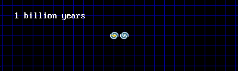
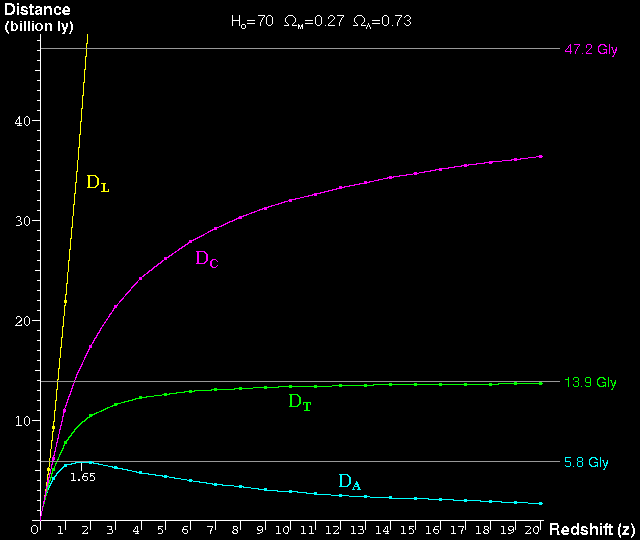

The Distance Scale of the Universe
Because the universe is expanding, the question of the distance to a very
distant galaxy is hard to answer. It all depends on your point of view.

This is the problem of defining a distance in an expanding universe:
Two galaxies are near to each other when the universe is only 1 billion years
old. The first galaxy emits a pulse of light. The second galaxy does not
receive the pulse until the universe is 14 billion years old. By this time,
the galaxies are separated by about 26 billion light years; the pulse of light
has been travelling for 13 billion years; and the view the people receive in
the second galaxy is an image of the first galaxy when it was only 1 billion
years old and when it was only about 2 billion light years away.
There are four different distance scales commonly found in cosmology:
- (1) Luminosity Distance - DL
- In an expanding universe, distant galaxies are much dimmer than you would
normally expect because the photons of light become stretched and spread out
over a wide area. This is why enormous telescopes are required to see
very distant galaxies. The most distant galaxies visible with the Hubble
Space Telescope are so dim that they appear as if they are about 350 billion
light years away even though they are much closer.
Luminosity Distance is not a realistic distance scale but it is useful for
determining how faint very distant galaxies appear to us.
- (2) Angular Diameter Distance - DA
- In an expanding universe, we see the galaxies near the edge of the visible
universe when they were very young nearly 14 billion years ago because it
has taken the light nearly 14 billion years to reach us. However, the
galaxies were not only young but they were also at that time much closer to us.
The faintest galaxies visible with the Hubble Space Telescope were only a few
billion light years from us when they emitted their light. This means
that very distant galaxies look much larger than you would normally expect
as if they were only about 2 or 3 billion light years from us (although they are
also very very faint - see Luminosity Distance).
Angular Diameter Distance is a good indication (especially in a flat
universe like ours) of how near the galaxy was to us when it emitted the light
that we now see.
- (3) Comoving Distance - DC
- The Comoving Distance is the distance scale that expands with the universe.
It tells us where the galaxies are now even though our view of the distant
universe is when it was much younger and smaller. On this scale the very
edge of the visible universe is now about 47 billion light years from us
although the most distant galaxies visible in the Hubble Space Telescope
will now be about 32 billion light years from us.
Comoving Distance is the opposite of the Angular Diameter Distance - it
tells us where galaxies are now rather than where they were when they emitted
the light that we now see.
- (4) Light Travel Time Distance - DT
- The Light Travel Time Distance represents the time taken for the light
from distant galaxies to reach us. This is what is meant when it is said that
the visible universe has a radius of 14 billion light years - it is simply a
statement that the universe is about 14 billion years old and the light from
more distant sources has not had time to reach us.
Light Travel Time Distance is as much a measure of time as a measure
of distance. It is useful mainly because it tells us how old the view of
the galaxy is that we are seeing.
For small distances (below about 2 billion light years) all four distance
scales converge and become the same, so it is much easier to define distances
to galaxies in the local universe around us.
Below - all four distance scales plotted against redshift. Redshift is a
measure of the stretching of light caused by the expansion of the universe - a
galaxy with a large redshift is further away than a galaxy with a small
redshift. The most distant galaxies visible with the Hubble Space telescope
are at redshift 10, whereas the most distant protogalaxies in the universe
are probably at about redshift 15. The edge of the visible universe is at
redshift infinity. A typical portable telescope, by contrast, can not see
very much beyond redshift 0.1 (about 1.3 billion light years).

The Luminosity Distance (DL) shows
why distant galaxies are so hard to see - a very young and distant galaxy at
redshift 15 would appear to be about 560 billion light years from us although
the Angular Diameter Distance (DA)
suggests that it was actually about 2.2 billion light years from us when
it emitted the light that we now see. The Light Travel Time Distance
(DT) tells us that the light
from this galaxy has travelled for 13.6 billion years between the time
that the light was emitted and today. The Comoving Distance
(DC) tells us that this same
galaxy today, if we could see it, would be about 35 billion light years
from us.
If anyone wants a copy of the computer code (written in C) which I wrote to
calculate all these distances, it is available here.